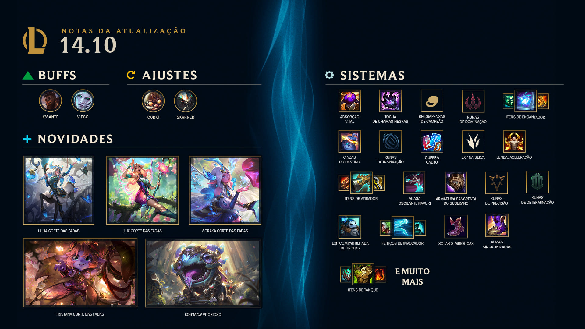

Sobre league of legendes
A 14.10 está chegando com tudo, e a Etapa 2 também! Temos muitas novidades na Atualização 14.10: fim da Etapa 1 e começo da Etapa 2, LoR chegando ao cliente do LoL, atualização nas Maestria de Campeões, vários ajustes no Arena e MUITAS mudanças em itens e runas, além de alterações sistêmicas de EXP e ouro. Ah! E temos também as novas skins Corte das Fadas! Alguns destaques de Campeões: temos um rework considerável para o Corki (que permite que ele seja viável na rota inferior e se afaste da mecânica de jogo de O Pacote), alguns ajustes no K'Sante e no Skarner, mudanças para que o Viego tenha mais presença na rota e mais viabilidade na selva para o Sett. Para quem joga ranqueada, boas-vindas à Etapa 2 de 2024! Essa atualização enorme inclui uma atualização completa para os itens de atiradores e de Campeões que dependem de ataques básicos, concedendo 25% de Chance de Acerto Crítico por item, além de aposentar aquelas opções individuais de Acerto Crítico + DdA + VdA. Tanques, encantadores, magos e lutadores também receberam atualizações significativas, mas um pouco menores. Também removemos, ou substituímos, várias runas que estavam fracas ou não faziam sucesso. Também fizemos ajustes no ganho de experiência e ouro, assim caçadores e o pessoal da rota inferior terão uma pequena vantagem no meio de jogo sem dominarem completamente depois.

Sobre o valorant
Atualização dos Agentes
BRIMSTONE
Fizemos pequenas atualizações na Fumaça Celeste (E) do Brimstone para garantir que ela abranja toda a área indicada pela interface quando você vai posicioná-la.
Isso deve garantir que, quando o contorno externo da interface indicada mostrar que a habilidade cobrirá um gargalo, a fumaça gerada cobrirá completamente essa área.
A mudança inclui um pequeno aumento no raio da fumaça do Brimstone, o que deve equipará-la ao tamanho da fumaça de outros Agentes, como o Omen.
Fumaça Celeste (E)
o raio: 410 >>> 415.
Ajustamos o tamanho da interface indicada para que o contorno externo corresponda ao tamanho da fumaça.
Sobre o TFT